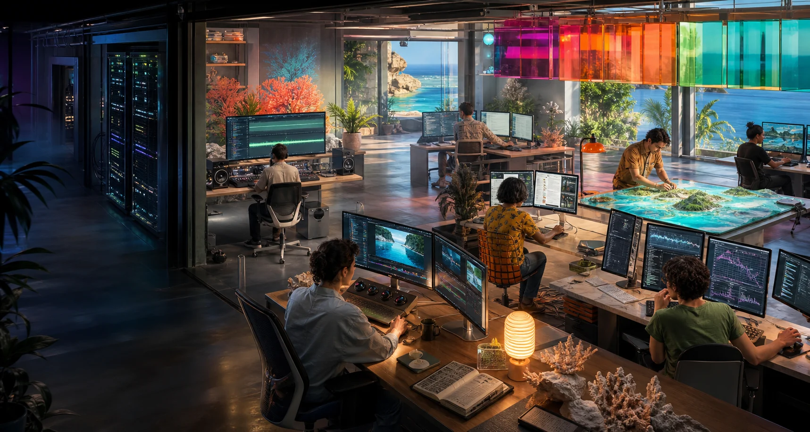

Culture and language
Permissioned transcription, language tools, archive description, search and locally held models. Human-only layers remain outside the system.
Starts with authority, purpose and custody.
A local node makes more sense when people reach for it during everyday work. Emergency usefulness grows from equipment, skills and relationships already in use.
The same local storage, computing capacity and trained people may support creative work one day and continuity work during an outage or severe-weather event.
Permissioned transcription, language tools, archive description, search and locally held models. Human-only layers remain outside the system.
Starts with authority, purpose and custody.Editing, rendering, colour, audio restoration, animation, virtual production and extended-reality experiments close to the creators.
Starts with real projects and skilled users.Layered views of environment, infrastructure, movement, hazards and community observations with provenance and uncertainty visible.
Starts with a clear question, not a total island model.Technical training, creative experimentation, domain models and evaluation using material that is appropriate for that purpose.
Starts with capability and review, not automation theatre.Processing imagery, sound, sensors and field records for locally relevant land, sea and coastal questions.
Starts with source quality and local interpretation.Selected local services, cached information, mapping, communications support and recovery tools when outside connections are constrained.
Starts with tested roles and realistic power limits.Some work is better on a laptop. Some needs a trusted external service. Some material is inappropriate for computation. Some workloads exceed one rack. A useful node design makes those boundaries obvious instead of treating local compute as a universal answer.